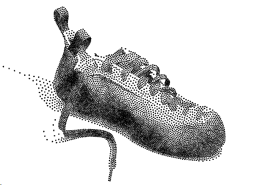

Reading time is a bug due to size of embedded SVG images.
Travelling Salesman (TSP) Art in Python
There is already a lot of existing work on this topic 1, but especially the book from Robert Bosch 2 inspired me to embark on my own
journey.
It became an rewarding and entertaining melange of “Mathematical Optimization” and playful programming while exploring new concepts and
building a basic theoretical foundation for one of the most famous problems in mathematical optimization.
The Travelling Salesman Problem (TSP)
Starting from his home, a salesman wishes to visit each of \((n − 1)\) cities and return home at minimal cost. He must visit each city
exactly once and it costs \(c_{ij}\) to travel from city \(i\) to city \(j\). What route should he select?
The problem is NP-hard and a brute force algorithm, e.g. trying all possible routes, has a runtime complexity of
\(O(n!)\).
If solving 10 cities (3.628.800 routes) takes 2s, then 20 cities are beyond 40.000 years compute time!
Fun Problem
Use the TSP challenge to create pictures by connecting points in a point cloud via a TSP solver. Of course
the point-cloud needs to encode meaningful information, i.e. a picture or graphic.
Why is this interesting?
Because an optimal TSP tour based on Euclidean distance is a simple closed curve. Like a circle,
it does not intersect with itself and it is closed, meaning no matter where you start, you will end up precisely where
you started.
Because a simple closed curve has an interior and an exterior, so coloring results in visually attractive structures.
Tooling
The following tasks need to be accomplished:
Create a point cloud which is suitables for drawing:
This task is rather more involved as it meets the eye 3. The challenge is to create a homogenous point cloud such
that the point density encodes the ‘color’ of the picture without creating lumpy areas.

A Python based implementation can be found here.
Find an optimal (shortest) route through all the points:
Here comes the solver into play. There are several options since the problem can be formulated as Mixed Integer
Programming problem. However due to the specificy and complexity of the problem it is best to use a specialized
solver. I just followed here the choice of much brighter brains 4 and went for Concorde5. Used by experts the results speak
of themselves 4:
Eventually draw the tour as continuous path and color the interior:
Some Python dabbling is necessary to glue everything together. From the generated Voronoi point-cloud a
TSLIB file needs to be generated as input for the solver.
Concorde then writes a solution file which in turn will be parsed in order to generate
a SVG drawing as final visualization of the result.
Putting it all together
Here the results of my first application:
BMW Logo, 15.000 points:
BMW Classic Car 2002: 15.000 points:
Photo 50.000 points:
Summary
TSP is a valid objective to explore in itself. Throwing in additional amusement via Stippling and SVG Drawing creates
together an enjoyable mix of learning motivation.
If you are interested in the Python code contact me via mail.